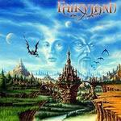

|
|
||
Fairyland : Of Wars In Osyrhia (2003) |
|

http://www.fairylandmetal.com |
1. Intro 1:25 |
7.4/10 |
|
Fairyland es una banda francesa, antes llamada Fantasy, fundada por el batería y compositor Willdric Lievin en 1998. Junto al teclista Philippe Giordana, el guitarrista Anthony Parker, antes en la banda Heavenly, y la cantante Elisa C. Martín, anterior vocalista del grupo español Dark Moor, Willdric a lanzado un disco de metal sinfónico y con letras sobre fantasía épica, como tantas otras bandas del estilo, algo que se puede intuir a partir de la portada o los títulos de las canciones. El disco tiene más o menos lo que se podía esperar: una intro bastante pomposa con algunos coros de estilo clásico y un narrador introduciendo la historia, temas espectaculares y rápidos, con profusión de teclados sobre el doble bombo, como "Ride with the Sun", "Doryan the Enlightened", "Fight for you King", "On the Path to Fury", "The Fellowship", "A Dark Omen" y el largo tema de cierre, "Of Wars in Osyrhia", y algunos más lentos, concretamente "The Storyteller" y "Rebirth", aunque igualmente melodiosos y elaborados. Casi siempre aparecen coros masculinos, en marcado contraste con la voz de Elisa Martín, una de las voces femeninas más conocidas y respetadas en el panorama del metal, las guitarras rítmicas casi desaparecen tras los sintetizadores, hay unos cuantos solos de guitarra y teclados bastante rápidos pero de estructura repetitiva que no aportan demasiado a las canciones, y largas partes instrumentales que a veces cansan un poco y cuyo máximo exponente es el tema instrumental "The Army of the White Mountain". Para ser un primer disco, la producción no está mal, aunque quizás es un tanto espesa y se echan en falta las guitarras rítmicas, aunque quizás esto se haya buscado así. Por lo demás éste es el típico disco de metal sinfónico. Es tan típico que realmente cuesta encontrar la diferencia entre una canción y otra. El disco suena bien, las canciones son melodiosas, pomposas, complejas y Elisa Martín hace un buen trabajo en la voz, pero tras haberlo escuchado unas cuentas veces todavía no recuerdo nada especial del disco, ningún estribillo se te queda, ningún pasaje destaca, ningún solo llama la atención. Un disco interesante para esos aficionados al metal sinfónico que siempre quieren oir algo nuevo, pero creo que le falta algo para destacar. |
||
- Crítica escrita por Rubén Béjar - |
||